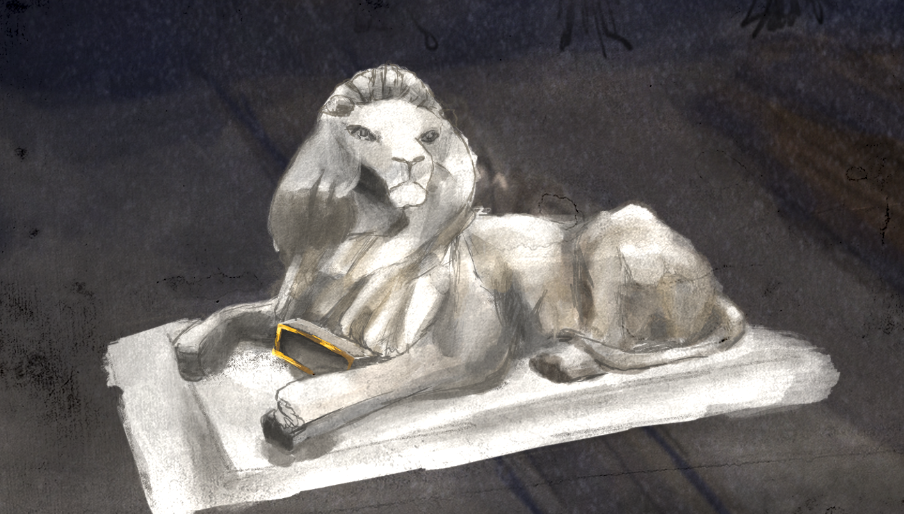

<div>

    <!--TODO - This scene needs as background the outdoors scene at night-->

    

    

    <p>Narr: {{narration.lion}}</p>
    <!--subtitles-->

    <p ng-click="lion_back()">Back to outside</p>

</div>
